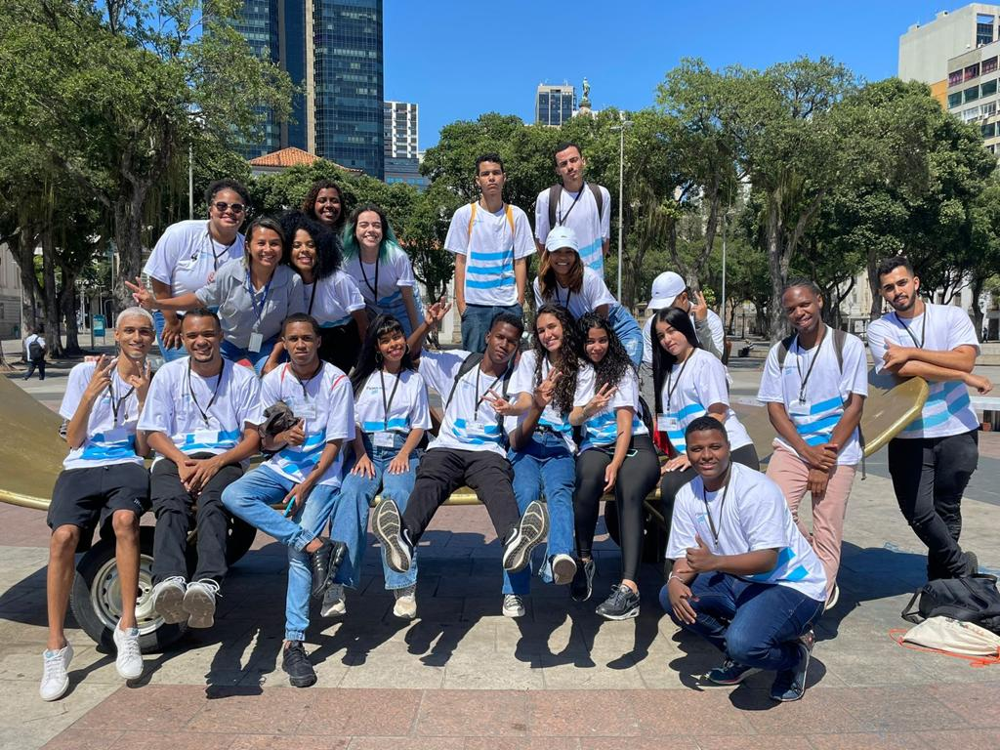

A nossa história começa em setembro de 2022, onde aconteceu o processo seletivo da turma para o curso de Desenvolvedor de Aplicativos, no qual nos apresentamos uns aos outros e apresentamos as nossas competências para as seletivas.
Em novembro, iniciamos as aulas de nivelamento e aconteceu o nosso primeiro passeio através da aula de Desenvolvimento Humano: uma exposição ao CCBB, representando “Os Gêmeos”. Também aconteceu o nosso primeiro seminário, no qual abordamos sobre a consciência negra e fizemos cartazes.
No ano seguinte, iniciamos o ano realizando uma trilha no Parque da Cidade e nos aproximamos, começando uma amizade entre a turma. Tivemos o primeiro contato com códigos e aplicativos, sob a orientação de alguns professores como Juan, Alessandra e Wagner, que nos ajudaram a aprimorar o necessário para iniciar nessa área da tecnologia e começamos as aulas em campo na Ilha do Tibau, em Piratininga.
Criamos uma apresentação no qual o objetivo era uma peça de teatro e o nosso tema foi focado nas redes sociais, em como elas nos influenciam e tornam as nossas vidas nas redes superficiais diante um dos outro. Visitamos o Movimento Negro Unificado, onde nós pudermos aprender melhor sobre a história do local, da luta e desenvolver nosso pensamento crítico. Também iniciamos o Projeto Integrador, que é um projeto final do curso de acordo com o tema que escolhemos dentro da nossa área.
Realizamos uma ação social, proporcionando um café da manhã solidário para pessoas em situação de rua onde tivemos a oportunidade de entrevistá-las e conhecer as suas histórias. Assim, nossa jornada continua, repleta de aprendizado, colaboração e descobertas, enquanto nos preparamos para os desafios e oportunidades que aguardam os futuros desenvolvedores de aplicativos.
